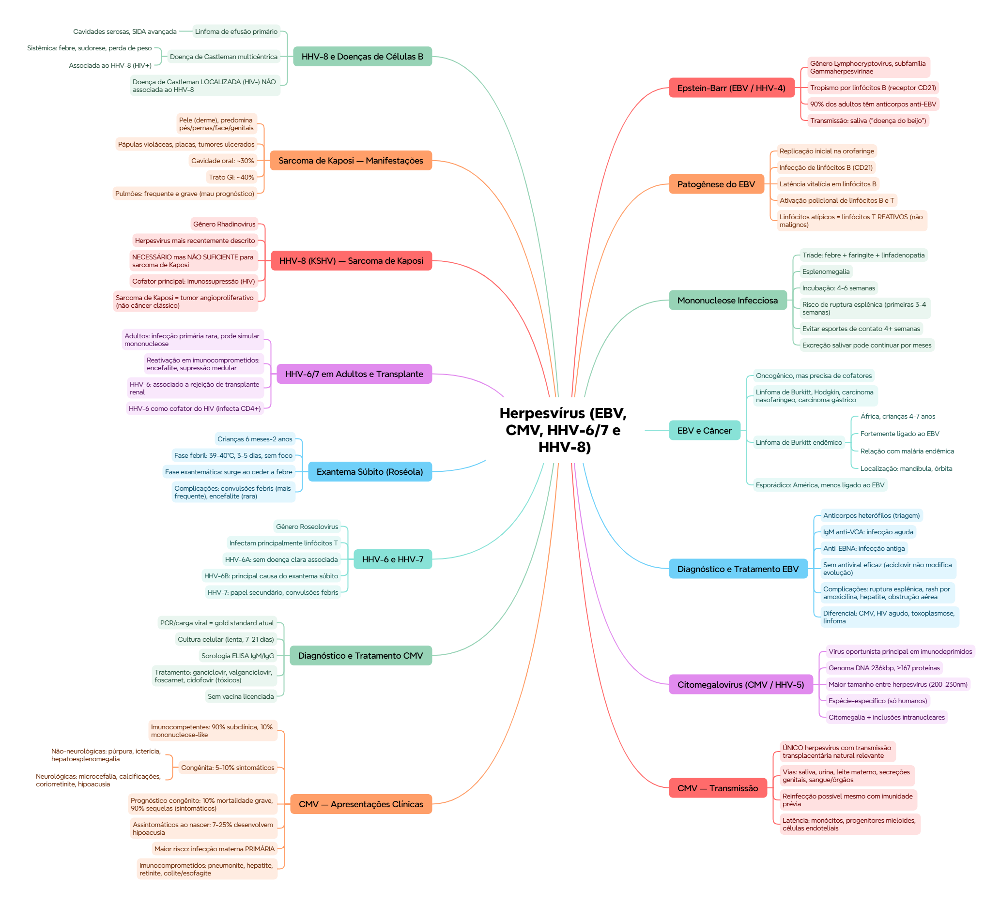

ClinicusMed · Dossiê Clinicus — Padrão de Excelência
Gênero Lymphocryptovirus, subfamília Gammaherpesvirinae. Tropismo principal por linfócitos B (via receptor CD21). Agente etiológico da mononucleose infecciosa.
Transmissão: principalmente saliva ("doença do beijo"), contato oral direto. Maior transmissão em adolescentes/adultos jovens. Na infância, costuma ser intrafamiliar e frequentemente assintomática.
Tríade clássica: (1) febre, (2) faringite (com exsudato, frequentemente), (3) linfadenopatia.
Outros achados: mal-estar geral, esplenomegalia.
| Parâmetro | Valor |
|---|---|
| Incubação | 4-6 semanas |
| Risco de ruptura esplênica | Especialmente nas primeiras 3-4 semanas |
Mesmo depois dos sintomas cederem, o paciente pode continuar eliminando vírus pela saliva por meses, sendo fonte de infecção.
Doenças associadas: linfoma de Burkitt, linfoma de Hodgkin, carcinoma nasofaríngeo, carcinoma gástrico, leucoplasia pilosa oral, doença linfoproliferativa pós-transplante.
| Subtipo | Características |
|---|---|
| Endêmico | África, fortemente relacionado ao EBV, predomina em crianças (4-7 anos) |
| Esporádico | América, menos relacionado ao EBV |
| Associado à imunossupressão | HIV ou outros estados imunossupressores |
Localização típica do Burkitt endêmico: mandíbula (massas faciais), órbita (proptose), abdômen (menos frequente).
| Método | Interpretação |
|---|---|
| Anticorpos heterófilos (IgM) | Triagem clássica |
| Anti-VCA IgM | Infecção AGUDA |
| Anti-VCA IgG | Infecção passada |
| Anti-EBNA | Infecção ANTIGA |
Tratamento: sintomático. Aciclovir não modifica a evolução da mononucleose — manejo é repouso, hidratação e controle de complicações. Sem vacina disponível.
| Situação clínica | Complicação |
|---|---|
| Dor abdominal súbita + síncope | Ruptura esplênica |
| Faringite + amoxicilina + rash | Exantema por EBV (reação clássica à amoxicilina) |
| Icterícia + AST/ALT elevadas | Hepatite por EBV |
| Amígdalas enormes + dificuldade respiratória | Obstrução aérea |
Diagnóstico diferencial: faringoamigdalite estreptocócica (esplenomegalia/linfocitose atípica tornam menos provável), CMV (síndrome semelhante), HIV agudo (simula mononucleose), toxoplasmose, linfoma, hepatite viral aguda.
Gênero Citomegalovirus. Um dos principais vírus oportunistas em imunodeprimidos (HIV, transplante).
| Característica | Detalhe |
|---|---|
| Genoma | DNA 236 kbp, codifica ≥167 proteínas |
| Tamanho viral | 200-230 nm — maior que outros herpesvírus |
| Especificidade | Espécie-específico (só infecta humanos) |
| Achado histopatológico | Inclusões intranucleares + citomegalia característica |
Vias de transmissão: saliva (crianças), urina (principalmente lactentes), leite materno (infecção neonatal), secreções genitais (transmissão sexual), sangue e órgãos (transfusões/transplantes).
Reinfecção é possível mesmo com resposta imune prévia — anticorpos neutralizantes e linfócitos T específicos não previnem reinfecção nem reativação.
Latência: monócitos/progenitores mieloides, células endoteliais, outros tecidos.
| Grupo | Apresentação |
|---|---|
| Imunocompetentes | 90% subclínica. 10% síndrome mononucleósica (febre, mal-estar, adenopatias) |
| Congênita | 5-10% sintomáticos. Não-neurológicas: púrpura, icterícia, hepatoesplenomegalia, anemia, pneumonia. Neurológicas: microcefalia, calcificações intracranianas, convulsões, coriorretinite, hipoacusia |
Prematuros de baixo peso (via transfusão/leite materno): quadro parecido com o congênito (hepatoesplenomegalia, trombocitopenia, insuficiência respiratória), mas com menor risco de sequelas.
Imunocomprometidos: neumonite, hepatite, retinite, colite/esofagite, encefalite (rara). Em HIV: retinite, colite e esofagite são as mais comuns.
Diagnóstico: cultura celular (lenta, 7-21 dias), PCR/carga viral = gold standard atual, sorologia (ELISA IgM/IgG). PCR quantitativa é chave no seguimento terapêutico.
Tratamento: ganciclovir (IV/VO), valganciclovir (VO), foscarnet (IV), cidofovir (IV) — todos tóxicos, uso com cautela, resistências por mutações virais. Profilaxia em HIV com CD4 baixo. Não existe vacina licenciada.
Inicialmente chamados "vírus linfotrópicos B", mas hoje se sabe que infectam principalmente linfócitos T. Gênero Roseolovirus. HHV-6 se divide em HHV-6A e HHV-6B.
Afeta crianças de 6 meses a 2 anos, curso geralmente benigno em imunocompetentes.
| Fase | Características |
|---|---|
| 1. Febril | Febre alta súbita (39-40°C), 3-5 dias, sem foco aparente, mal-estar e linfadenopatia leve |
| 2. Exantemática | Ao ceder a febre, exantema maculopapular surge — começa em tronco/face, se estende às extremidades. Lesões rosadas, leves, não pruriginosas. Resolução em 1-3 dias |
Complicações: convulsões febris (a mais frequente, geralmente benignas), encefalite (rara, mas grave), linfoadenite, hepatite.
Em adultos: infecção primária é rara (maioria já foi infectada na infância), mas quando ocorre pode simular mononucleose por EBV.
Reativação: frequente em transplantados e imunocomprometidos — pode ser assintomática ou associada a encefalite, supressão de medula óssea, gastroduodenite, colite, pneumonite, exantemas.
HHV-6 e transplante: associado a rejeição de transplante renal, especialmente em pacientes sem anticorpos prévios ao transplante.
HHV-6 como cofator do HIV: ambos infectam linfócitos CD4+; postula-se que o HHV-6 favorece a replicação do HIV e contribui pra imunodeficiência.
Família Herpesviridae, subfamília Gammaherpesvirinae, gênero Rhadinovirus. Herpesvírus humano descrito mais recentemente, identificado por sua associação direta com o sarcoma de Kaposi.
Sarcoma de Kaposi: neoplasia endotelial peculiar, NÃO considerada um câncer clássico — é um tumor angioproliferativo, altamente vascularizado, com infiltrado inflamatório e proliferação endotelial anormal.
Localização: predomina na pele (derme); também acomete trato GI, pulmões, cavidade oral, estruturas linfáticas.
Lesões cutâneas: pápulas violáceas, placas infiltradas, tumores ulcerados — localização frequente em pés/pernas, face (especialmente nariz), genitais. Cor violácea pela proliferação vascular e extravasamento de eritrócitos.
| Local de disseminação | Frequência |
|---|---|
| Cavidade oral | ~30% dos pacientes |
| Trato gastrointestinal | ~40% |
| Pulmões | Frequente e grave |
| Doença | Características |
|---|---|
| Linfoma de efusão primário | Neoplasia maligna clonal, cavidades serosas (pleura/pericárdio/peritônio), típico em SIDA avançada |
| Doença de Castleman multicêntrica | Linfoproliferativa sistêmica: febre, sudorese, perda de peso, adenopatias, esplenomegalia |
A doença de Castleman localizada (1 gânglio único, pacientes HIV-negativos) NÃO está associada ao HHV-8 — só a forma multicêntrica (sistêmica, HIV-positivos) tem essa associação.
Vamos acompanhar Beatriz, 17 anos, com febre, dor de garganta intensa e cansaço há uma semana. O caso evolui em 3 níveis — clica em cada um pra ver como as coisas vão se desenrolando.
Visão geral do capítulo em formato visual — ideal pra revisão rápida antes da prova. O conteúdo completo, com explicações e exemplos, está no Guia de Estudo.

O sistema guarda, no seu navegador, quais cards você já sabe bem e quais precisam voltar mais cedo — cada vez que você avalia um card, ele recalcula quando ele deve voltar.
10 questões, do mais básico ao mais puxado. Escolhe uma alternativa, depois clica em "Ver comentário completo" — vale a pena ler até quando você acerta, porque o comentário explica cada alternativa, não só a certa.